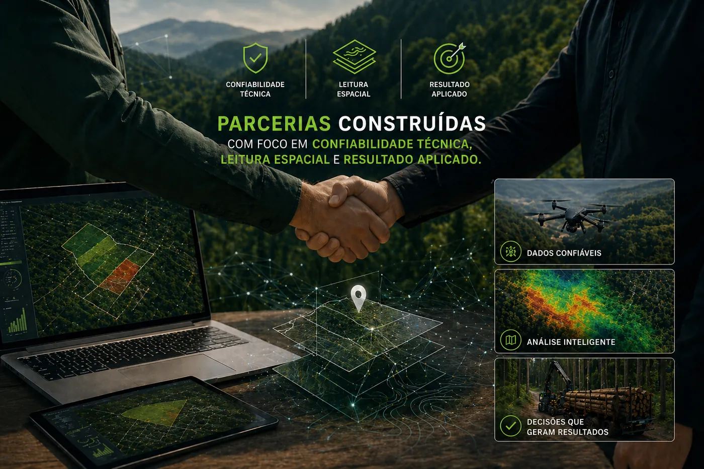
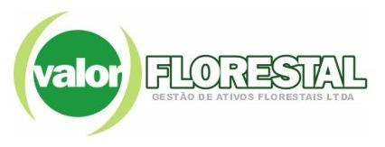
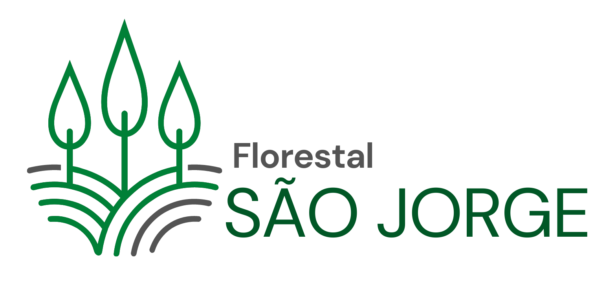
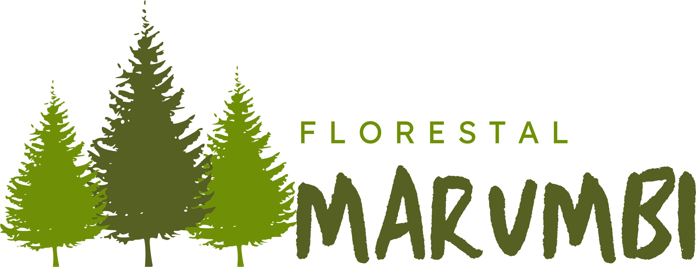
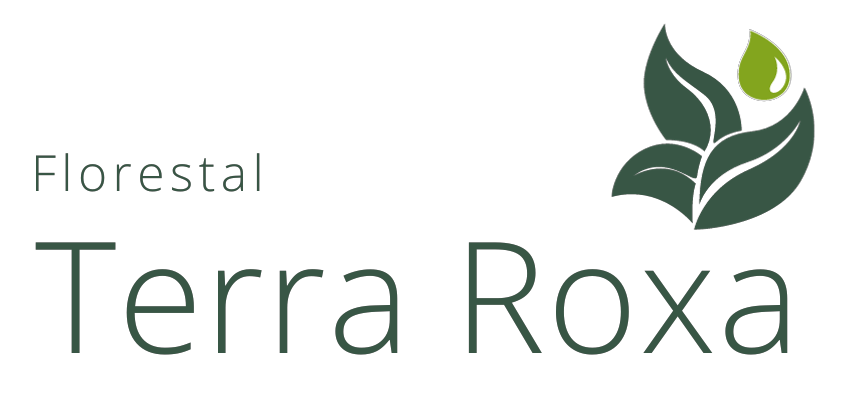
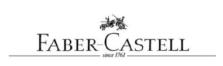

Empresas florestais
Planejamento, monitoramento, mapas operacionais e apoio à produção.
A Avant atende organizações que dependem de leitura territorial, inteligência de dados, automação e precisão cartográfica para decidir melhor. Atuamos como parceiro técnico para operações florestais, ambientais, fundiárias e agroindustriais.

Inspirada na área “Parceiros” do site atual, esta página apresenta a Avant como suporte técnico para empresas e projetos que precisam conectar mapas, sensoriamento remoto, manejo florestal, regularização fundiária e sistemas de acompanhamento.






A mesma base técnica pode apoiar operações privadas, projetos públicos, restauração e ativos com foco em produtividade, conformidade e gestão territorial.
Planejamento, monitoramento, mapas operacionais e apoio à produção.
Base cartográfica, regularização, análise produtiva e leitura territorial.
Dados geoespaciais, vetorização técnica, relatórios e suporte analítico.
Indicadores, rastreabilidade e suporte para operações ligadas à cadeia da madeira.
Monitoramento de áreas, análises multitemporais e acompanhamento de plantios.
Organização documental, leitura de imóveis e apoio territorial para decisões.
Entrega técnica com linguagem clara para múltiplos stakeholders.
Abaixo está uma área preparada para cases comerciais. Os nomes podem ser substituídos pelos clientes reais e enriquecidos com imagens, dashboards e métricas conforme a evolução do portfólio.
Unificar limites de propriedades, talhões, estradas e áreas de apoio em uma base territorial confiável para operação distribuída em múltiplas fazendas.
Estruturação de base geoespacial integrada, padronização cartográfica, vetorização técnica e geração de mapas operacionais para consulta rápida por equipe de campo e gestão.
Mais segurança na tomada de decisão, padronização de informação territorial e melhor leitura operacional das áreas prioritárias.
Reduzir a dependência de conferência manual em campo para validar plantio, detectar falhas e acelerar auditorias em grandes áreas.
Aplicação de visão computacional em ortomosaicos de drone, contagem automática de mudas, identificação de falhas de plantio e relatórios espaciais por faixa e talhão.
Mais precisão operacional, redução do tempo de levantamento em campo e visão espacial objetiva das inconsistências de plantio.
Organizar dados técnicos dispersos para apoiar decisões executivas em manejo, geotecnologia, fundiário e acompanhamento institucional.
Desenvolvimento de dashboards web, relatórios executivos, mapas temáticos e páginas institucionais de acesso com foco em rastreabilidade e clareza da informação.
Integração entre operação, dados e gestão, com comunicação mais clara entre equipes técnicas, coordenação e direção.